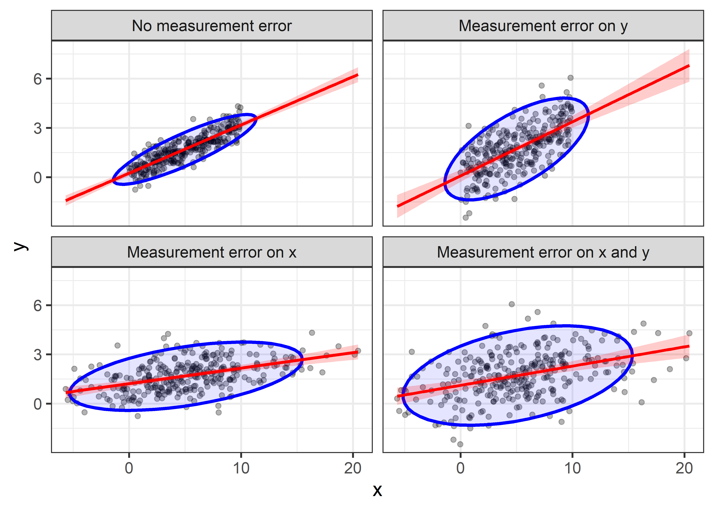
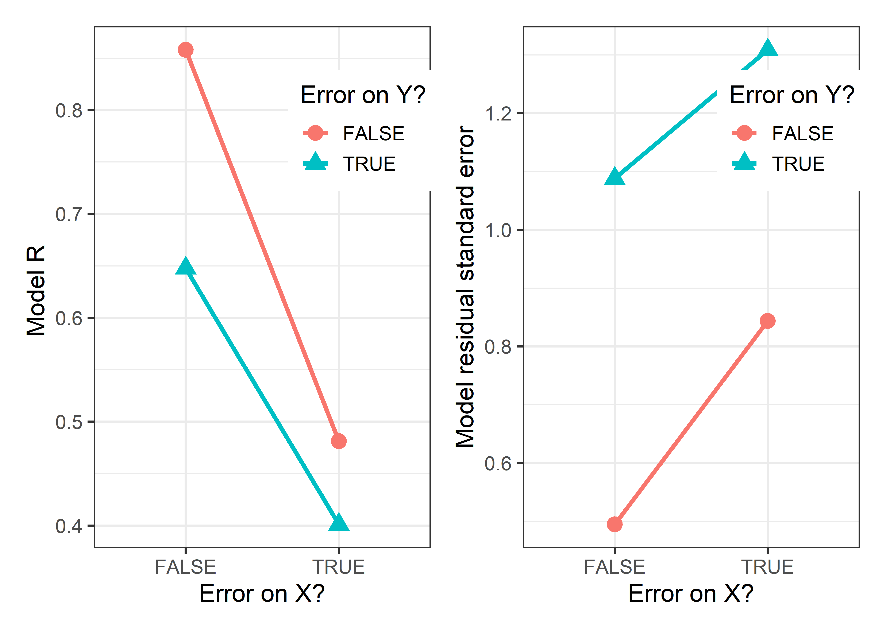

library(dplyr)
library(ggplot2)
library(forcats)
library(patchwork)
set.seed(123)
n <- 300
a <- 0.2 # true intercept
b <- 0.3 # true slope
sigma <- 0.5 # baseline error standard deviation
x <- runif(n, 0, 10)
y <- rnorm(n, a + b*x, sigma)
demo <- data.frame(x,y)Topics in linear models
Measurement error
OLS is BLUE
In classical linear models, the predictors are often considered to be fixed variables, or, if random, to be measured without error and independent of the regression errors. Either condition, along with the assumption of linearity, guarantees that the standard OLS estimators are unbiased. That is, in a simple linear regression, \(y = \beta_0 + \beta_1 x + \epsilon\), the estimated slope \(\hat{\beta}_1\) wiil have an average, expected value \(\mathcal{E} (\hat{\beta}_1)\) equal to the true population value \(\beta_1\) over repeated samples.
Not only this, but the Gauss-Markov theorem guarantees that the OLS estimator is also the most efficient because it has the least variance among all linear and unbiased estimators. The classical OLS estimator is said to be BLUE: Best (lowest variance), Linear (among linear estimators), Unbiased, Estimator.
Errors in predictors
Errors in the response \(y\) are accounted for in the model and measured by the mean squared error, \(\text{MSE} = \hat{\sigma}_\epsilon^2\). But in practice, of course, predictor variables are often also observed indicators, subject to their own error. Indeed, in the behavioral sciences it is rare that predictors are perfectly reliable and measured exactly. This fact that is recognized in errors-in-variables regression models [@Fuller2006] and in more general structural equation models, but often ignored otherwise. Ellipsoids in data space and \(\beta\) space are well suited to showing the effect of measurement error in predictors on OLS estimates.
The statistical facts are well known, though perhaps counter-intuitive in certain details: measurement error in a predictor biases regression coefficients (towards 0), while error in the measurement in \(y\) increases the MSE and thus standard errors of the regression coefficients but does not introduce bias in the coefficients.
Example
An illuminating example can be constructed by starting with the simple linear regression \[ y_i = \beta_0 + \beta_1 x_i + \epsilon_i \; , \] where \(x_i\) is the true, fully reliable predictor and \(y\) is the response, with error variance \(\sigma_\epsilon^2\). Now consider that don’t measure \(x_i\) exactly, but instead observe \(x^\star_i\). \[ x^\star_i = x_i + \eta_i \; , \] where the measurement error \(\eta_i\) is independent of the true \(x_i\) with variance \(\sigma^2_\eta\). We can extend this example to also consider the effect of adding additional, independent error variance to \(y\), so that instead of \(y_i\) we observe
\[ y^\star_i = y_i + \nu_i \] with variance \(\sigma^2_\nu\).
Let’s simulate an example where the true relation is \(y = 0.2 + 0.3 x\) with error standard deviation \(\sigma = 0.5\). I’ll take \(x\) to be uniformly distributed in [0, 10] and calculate \(y\) as normally distributed around that linear relation.
Then, generate alternative values \(x^\star\) and \(y^\star\) with additional error standard deviations around \(x\) given by \(\sigma_\eta = 4\) and around \(y\) given by \(\sigma_\nu = 1\).
err_y <- 1 # additional error stdev for y
err_x <- 4 # additional error stdev for x
demo <- demo |>
mutate(y_star = rnorm(n, y, err_y),
x_star = rnorm(n, x, err_x))There are four possible models we could fit and compare, using the combinations of \((x, x^\star)\) and \((y, y^\star)\)
fit_1 <- lm(y ~ x, data = demo) # no additional error
fit_2 <- lm(y_star ~ x, data = demo) # error in y
fit_3 <- lm(y ~ x_star, data = demo) # error in x
fit_4 <- lm(y_star ~ x_star, data = demo) # error in x and yHowever, to show the differences visually, we can simply plot the data for each pair and show the regression lines (with confidence bands) and the data ellipses. To do this efficiently with ggplot2, it is necessary to transform the demo data to long format with columns x and y, distinguished by name for the four combinations.
# make the demo dataset long, with names for the four conditions
df <- bind_rows(
data.frame(x=demo$x, y=demo$y, name="No measurement error"),
data.frame(x=demo$x, y=demo$y_star, name="Measurement error on y"),
data.frame(x=demo$x_star, y=demo$y, name="Measurement error on x"),
data.frame(x=demo$x_star, y=demo$y_star, name="Measurement error on x and y")) |>
mutate(name = fct_inorder(name)) Then, we can plot the data in df with points, regression lines and a data ellipse, faceting by name to give the measurement error quartet.
ggplot(df, aes(x, y)) +
geom_point(alpha = 0.3) +
stat_ellipse(geom = "polygon",
color = "blue",fill= "blue",
alpha=0.1, linewidth = 1.1) +
geom_smooth(method="lm", formula = y~x, fullrange=TRUE, level=0.995,
color = "red", fill = "red", alpha = 0.2) +
facet_wrap(~name) +
theme_bw(base_size = 14)
Comparing the plots in the first row, you can see that when additional error is added to \(y\), the regression slope remains essentially unchanged, illustrating that the estimate is unbiased. However, the confidence bounds on the regression line become wider, and the data ellipse becomes fatter in the \(y\) direction, illustrating the loss of precision.
The effect of error in \(x\) is less kind. Comparing the first row of plots with the second row, you can see that the estimated slope decreases when errors are added to \(x\). This is called attenuation bias, and it can be shown that \[ \widehat{\beta}_{x^\star} \longrightarrow \frac{\beta}{1+\sigma^2_\eta /\sigma^2_x} \; , \] where \(\beta\) here refers to the regression slope and \(\longrightarrow\) means “converges to”, as the sample size gets large. Thus, as \(\sigma^2_\eta\) increases, \(\widehat{\beta}_{x^\star}\) becomes less than $.
Beyond plots like Figure 1, we can see the effects of error in \(x\) or \(y\) on the model summary statistics such as the correlation \(r_{xy}\) or MSE by extracting these from the fitted models. This is easily done using dplyr::nest_by(name) …
model_stats <- df |>
dplyr::nest_by(name) |>
mutate(model = list(lm(y ~ x, data = data)),
sigma = sigma(model),
intercept = coef(model)[1],
slope = coef(model)[2],
r = sqrt(summary(model)$r.squared)) |>
mutate(errX = stringr::str_detect(name, " x"),
errY = stringr::str_detect(name, " y")) |>
relocate(errX, errY, r, .after = name) |>
select(-data) |>
print()
#> # A tibble: 4 × 8
#> # Rowwise: name
#> name errX errY r model sigma intercept slope
#> <fct> <lgl> <lgl> <dbl> <lis> <dbl> <dbl> <dbl>
#> 1 No measurement err… FALSE FALSE 0.858 <lm> 0.495 0.244 0.294
#> 2 Measurement error … FALSE TRUE 0.648 <lm> 1.09 0.0838 0.329
#> 3 Measurement error … TRUE FALSE 0.481 <lm> 0.844 1.22 0.0946
#> 4 Measurement error … TRUE TRUE 0.401 <lm> 1.31 1.12 0.117p1 <- ggplot(data=model_stats,
aes(x = errX, y = r,
group = errY, color = errY, shape = errY)) +
geom_point(size = 4) +
geom_line(linewidth = 1.2) +
labs(x = "Error on X?",
y = "Model R ",
color = "Error on Y?",
shape = "Error on Y?") +
theme_bw(base_size = 14) +
theme(legend.position = "inside",
legend.position.inside = c(.8, .8))
p2 <- ggplot(data=model_stats,
aes(x = errX, y = sigma,
group = errY, color = errY, shape = errY)) +
geom_point(size = 4) +
geom_line(linewidth = 1.2) +
labs(x = "Error on X?",
y = "Model residual standard error",
color = "Error on Y?",
shape = "Error on Y?") +
theme_bw(base_size = 14) +
theme(legend.position = "inside",
legend.position.inside = c(.8, .8))
p1 + p2